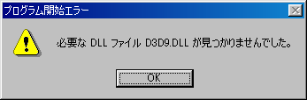
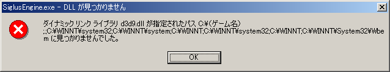
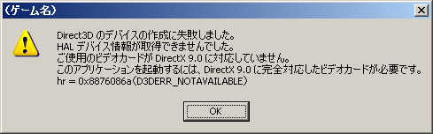
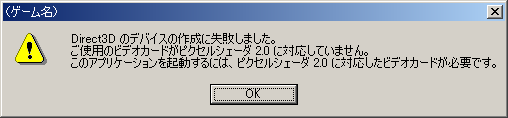

ご使用中のパソコンに DirectX 9.0 が入っていません。 マイクロソフトのウェブサイトより、最新版の DirectX End-User Runtime をダウンロードして下さい。
■Microsoft DirectXhttp://www.microsoft.com/japan/directx/default.mspx

ご使用のビデオカードが DirectX 9.0 に対応していないため、ゲームを起動することが出来ません。 申し訳ございませんが、対応外のビデオカードとなります。

ご使用のビデオカードがピクセルシェーダ 2.0 に対応していないため、ゲームを起動することが出来ません。 申し訳ございませんが、対応外のビデオカードとなります。